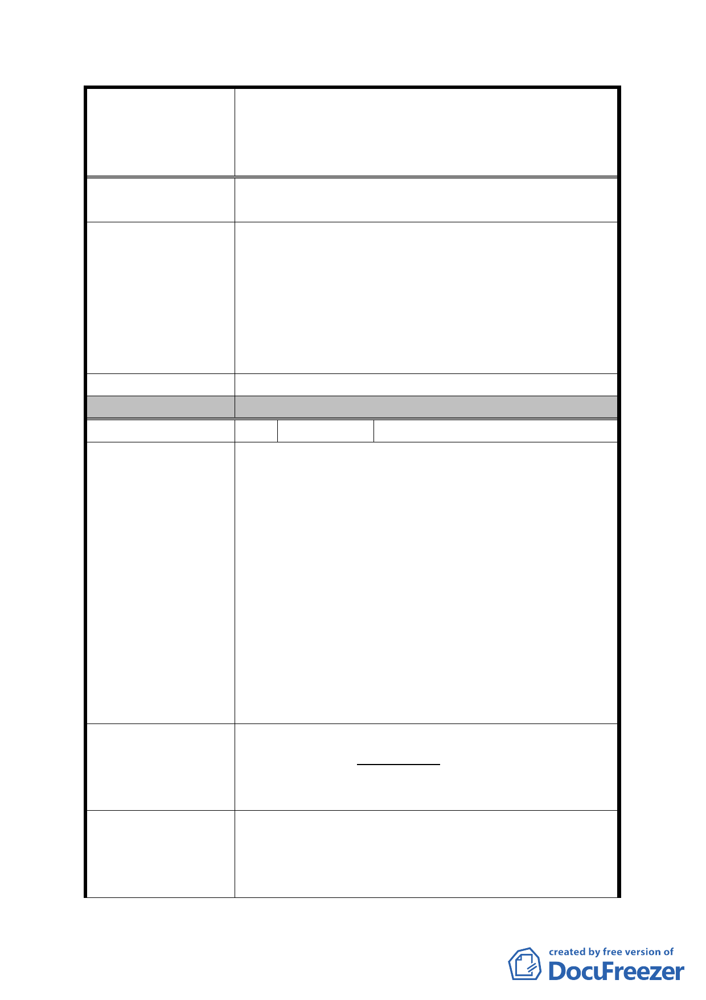

案名
建議辦法
發展局回應意見
委員會決議
編號
陳情理由
建議辦法
發展局回應意見
擬定臺北市內湖區蘆洲里附近工業區細部計畫暨變
更第 2 種工業區為科技工業區 B 區(特)、科技工業
區 B 區、道路用地、護坡用地及變更工業區(供輕工
業使用)為科技工業區 A 區(特)計畫案
觀瞻之貢獻度會少於優惠多多的 0.5 公頃之開
發個案嗎？
綜上具體事實陳述建請市府以專業考量：採都市更
新條例之優惠思維及 2010 年台北好好看之專案精
神，以及內政部頒訂之工業區變更為住宅區之實施
辦法為法令依據，提高本細部計畫區之容積率，促
進原地主們參與重劃意願，透過「重劃」手段來推
動本區之開發，創造雙贏，以上本居居民與地主之
心聲，請市府有關當局重視。
同細計編號 2。
同編號 2 決議一至三。
11 陳情人 聰明社區管理委員會(計 24 戶)
1. 欣聞市府促進本里(蘆洲里工業區)之更新再發
展，重新檢討以重劃方式，提昇第區環境品質，
規劃調整適宜街廓規模，促進土地有效開發，形
塑本區優質的產業及就業環境，納入「內湖科技
園區」之發展，本里居民莫不歡欣鼓舞。
2. 惟納入重劃後，社區大樓須重新予以拆除、辦理
改建，除耗費人力、物力，影響現駐廠商營運外，
將造成本社區所有權人莫大損失。
3. 考量現況，本社區兩棟新式大樓才於近年來陸續
改建完畢，並有多家公司、廠商進駐使用中，社
區改造乃端賴全體住戶/各區分所有權人投入畢
生財力、心力外，且市府在次拆除後重覆改建實
無必要。
本社區完建之新大樓所佔面積方正，且緊臨潭美街
及安康路 106 巷台北好好看(內湖萬客隆)豐鑫潭美
段科技辦公大樓都更案，與市府蘆洲里重劃案應可
獨立排除分開，不影響整區重新規劃案。
有關陳情將本案基地剔除於重劃範圍外 1 節，經初
步檢視因涉及是否影響鄰地開發建築及需繳納差
額地價等問題，後續將配合開發總隊研析結果及依
專案小組決議再予研議妥適方案。
- 37 -